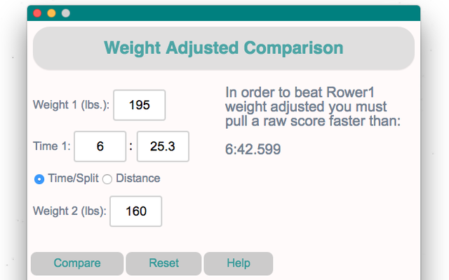

ErgoSC
The Ergometer Split Calculator is a google chrome application that allows you to calculate raw and weight adjusted
splits, times, and distances from the comfort of your desktop.
No internet connection required.
No internet connection required.
Using the Compare feature you can calculate the raw erg
scores necessary to beat another rower weight adjusted.
